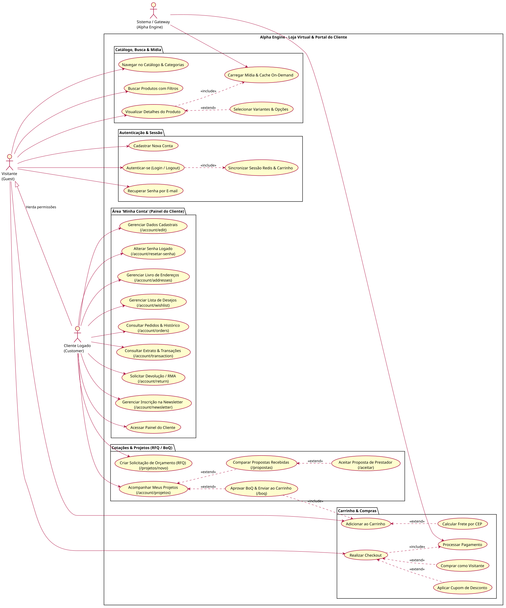
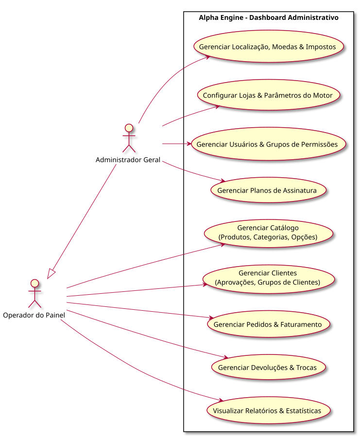

Casos de Uso do Sistema e Especificações
Mapeamento dos 7 Atores do ecossistema, 3 Diagramas Gerais de Casos de Uso em SVG e 10 Especificações Modulares Detalhadas com fluxos alternativos e de exceção.
1. Atores do Sistema
Visitante (Guest)
Consumidor anônimo que navega na vitrine, consulta fichas técnicas, simula frete e adiciona itens ao carrinho anônimo com persistência temporária.
Cliente (PF / PJ)
Usuário autenticado. Realiza checkout completo, salva endereços de obras (shiptos), acompanha pedidos e solicita devolução/troca (RMA).
Vendedor de Balcão (POS)
Realiza atendimento técnico presencial, utiliza a calculadora de pisos (m²), gera orçamentos e emite pré-vendas vinculadas a comissão.
Operador de Caixa (POS)
Recupera a pré-venda ou passa itens com leitor de código de barras, recebe pagamentos multi-meios e comanda a emissão de NFC-e com baixa de estoque.
Operador do Painel (SAC)
Responsável pela moderação de avaliações, atendimento ao cliente, validação de devoluções (RMA) e controle básico de expedição.
Administrador Geral
Gestão completa de SKUs, regras fiscais (NCM, DIFAL), parametrização de frete, relatórios de faturamento e controle de acessos (RBAC).
Gateways & SEFAZ
APIs de pagamento (PIX, Cartão), Webhook da SEFAZ para autorização de NF-e/NFC-e e serviços de cálculo de frete (Correios/Transportadoras).
2. Diagramas Gerais de Casos de Uso (UML SVG)

docs/business/use-cases/

docs/business/use-cases/

docs/business/use-cases/
3. Especificações Detalhadas dos Casos de Uso Core
| Caso de Uso | Atores Primários | Requisitos Atendidos | Resumo do Fluxo Principal & Exceções |
|---|---|---|---|
| UC001: Navegar no Catálogo & PDP | Visitante, Cliente | RF001, RF002, RF011, RF012 | O usuário pesquisa produtos com filtros facetados, acessa a PDP com calculadora de pisos em m² e simula frete. Exceção: Produto esgotado é sinalizado com aviso de "Avise-me". |
| UC002: Gestão CRUD de SKUs | Administrador | RF001, RF003, RF005 | Cadastro completo com fotos HD, peso, dimensões, NCM e variações. Exceção: Bloqueio de gravação caso dimensões de cubagem ou NCM estejam vazios (RN002, RN003). |
| UC003: Autenticação & Cadastro | Visitante, Cliente | RF014, RF015 | Cadastro dual com validação de CPF ou CNPJ com Inscrição Estadual ativa. Recuperação de senha com token de 15 min. Exceção: IE inválida rejeita o cadastro PJ com mensagem orientativa. |
| UC004: Gerenciar Carrinho de Compras | Visitante, Cliente | RF004, RF009 | Inserção de itens com conversão automática de m² em caixas completas. Ao efetuar login, o carrinho de sessão é mesclado ao banco. Exceção: Quantidade solicitada acima do estoque emite alerta imediato. |
| UC005: Checkout E-Commerce | Cliente, Gateways | RF010, RF018, RF019, RF020 | Seleção de endereço de entrega (shipto), cálculo de ICMS-ST/DIFAL, escolha do meio de pagamento (PIX, Cartão ou Boleto) e fechamento seguro. Exceção: Falha na autorização do cartão permite tentar outro meio. |
| UC006: Pré-Venda no PDV Balcão | Vendedor POS, Cliente | RF004, RF006, RF021 | Vendedor realiza cotação técnica com reserva de estoque temporária e gera o comprovante de pré-venda com código de barras para o caixa. Exceção: Falta de estoque físico impede a emissão da pré-venda. |
| UC007: Fechamento de Venda no Caixa | Operador Caixa, SEFAZ | RF006, RF018, RF020 | Caixa bipeia o código da pré-venda, recebe o pagamento (dinheiro, PIX ou TEF) e emite a NFC-e diretamente no fisco, com baixa no estoque físico. Exceção: Rejeição do TEF permite retentativa ou pagamento alternativo. |
| UC008: Solicitar Devolução (RMA) | Cliente, SAC | RF016, RF022 | Cliente abre pedido de logística reversa pelo painel dentro do prazo de 7 dias do CDC. O sistema gera a autorização de postagem reversa. Exceção: Pedido fora do prazo de garantia/arrependimento tem abertura bloqueada. |
| UC009: Gestão de Devoluções no Painel | Operador do Painel | RF022, RF025 | Inspeção do produto recebido no centro de distribuição, aprovação do estorno bancário e reintegração automática ao saldo do estoque. Exceção: Produto avariado por mau uso tem a devolução reprovada com laudo fotográfico. |
| UC010: Monitoramento de Ruptura | Administrador | RF006, RF024 | Painel analítico exibe curva ABC de estoque e itens que atingiram o limite mínimo de ressuprimento, sugerindo ordens de compra ao fornecedor. Exceção: Ruptura iminente envia notificação de alta prioridade por e-mail. |